舒尔se425更换外壳（se535外壳）
上个月找了一份工作，没大有时间写文章了。现在上班坐公交在路上要大约一个半小时，就又用来学英语了。很久以前买的舒尔的se425外壳有点开裂，就网上买了535（商家表示和425通用）的壳自己更换一下，攒了点经验。
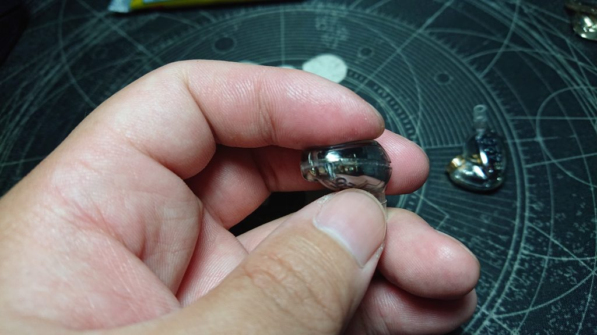
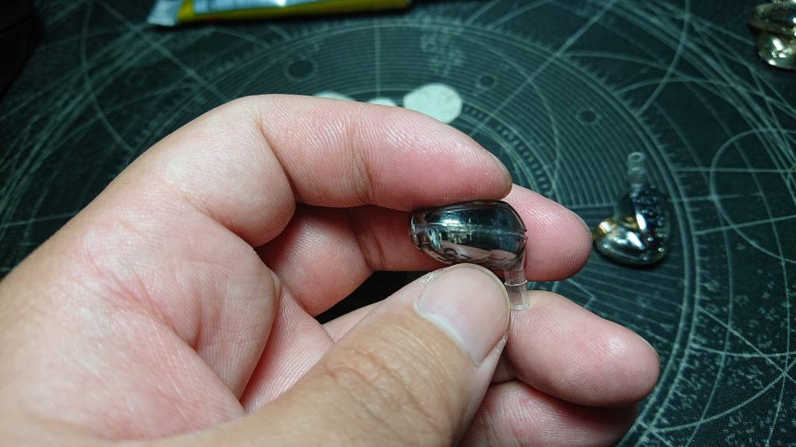
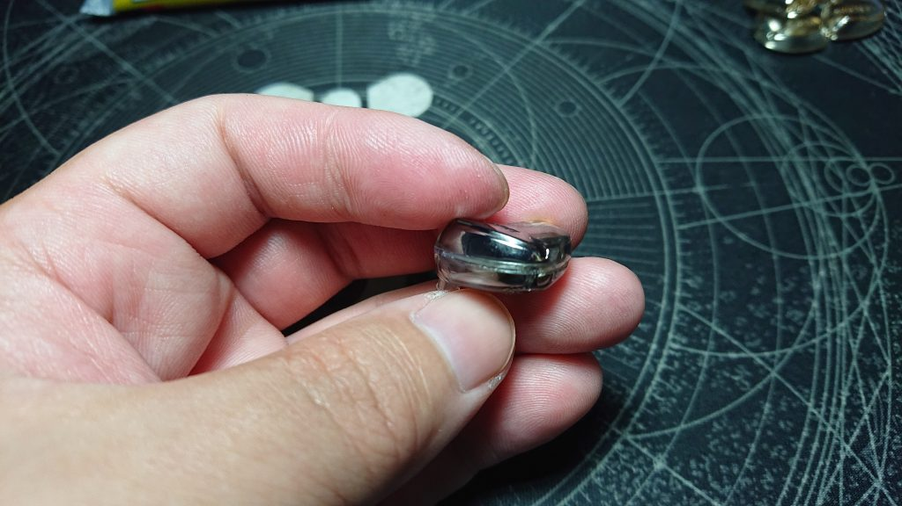
这三张是原装425的照片，外壳结合的地方已经脱离了。
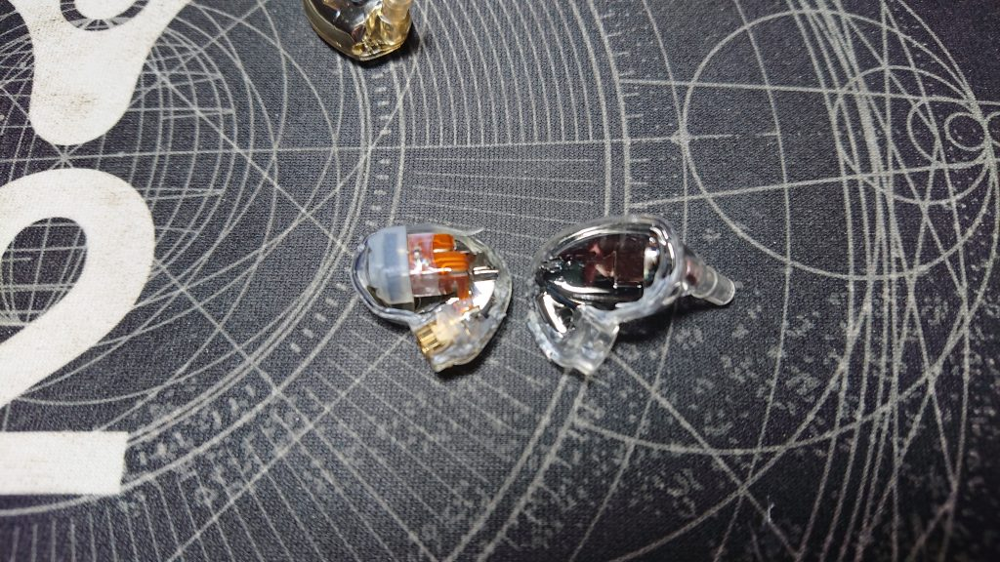
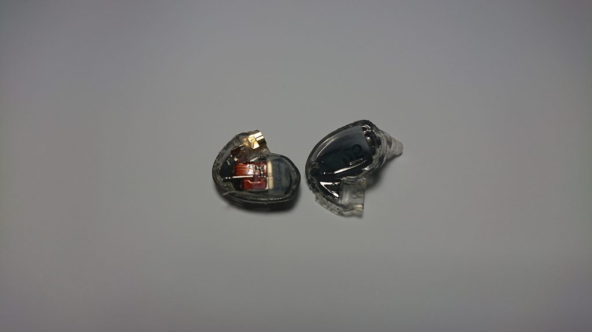
开盖后的425
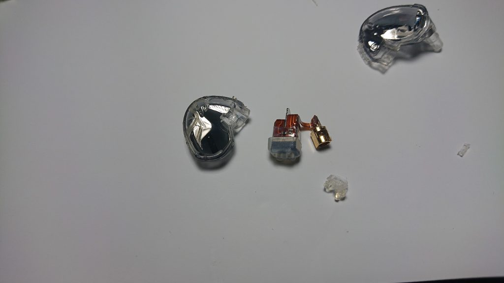
拿出单元分频器，除胶后的图片。图片中的白色的并不是胶，我在拆第二个时才发现，那是个胶圈，我把它当胶给撤下来了。心疼~~~
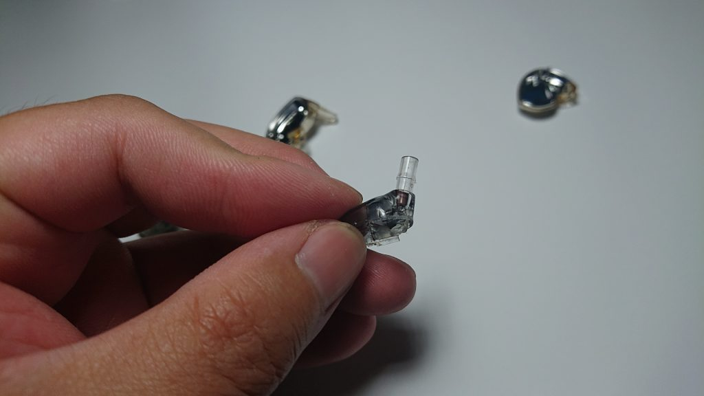
然后有导管的这一瓣，我没有买导管里的过滤网。
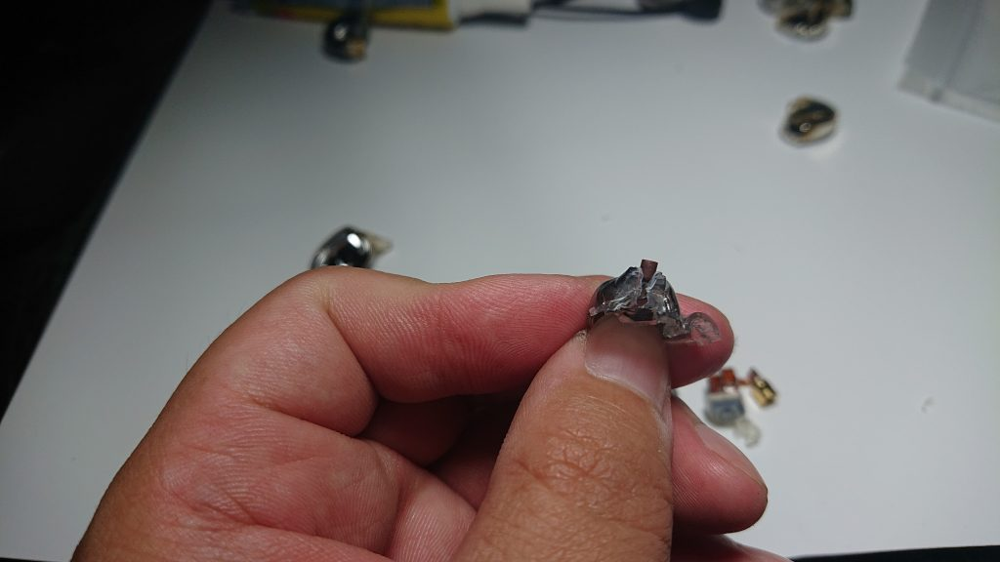
我把旧外壳切了，拿出来的。这玩意还不便宜呢！可是我在往新壳中安装时把第一个给捅坏了。最后发现牙签的粗细正好可以把过滤网捅进去。
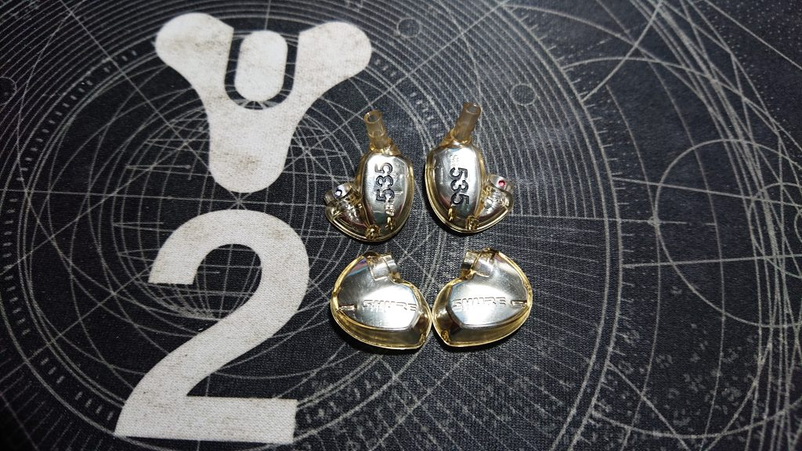
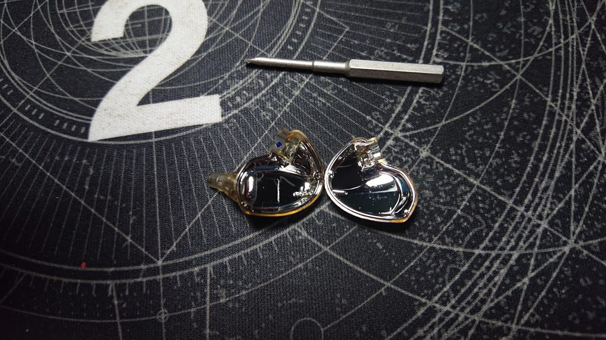
新壳的图片
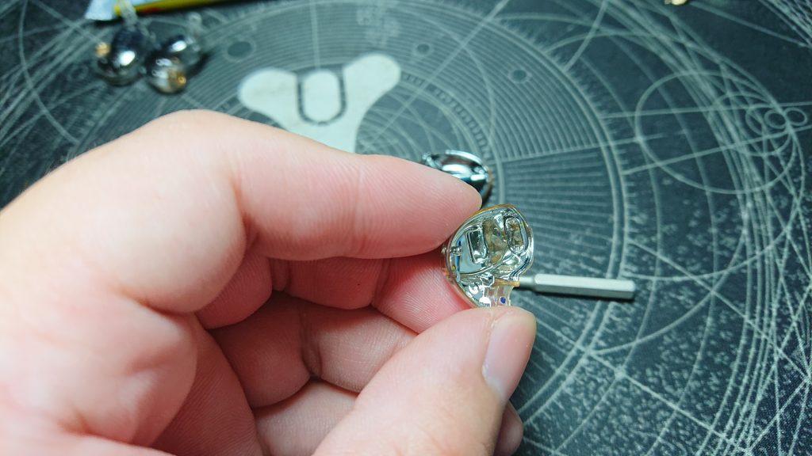
有导管的一侧，图片看不清，单元就是在这里将声音通过导管传递出去的。
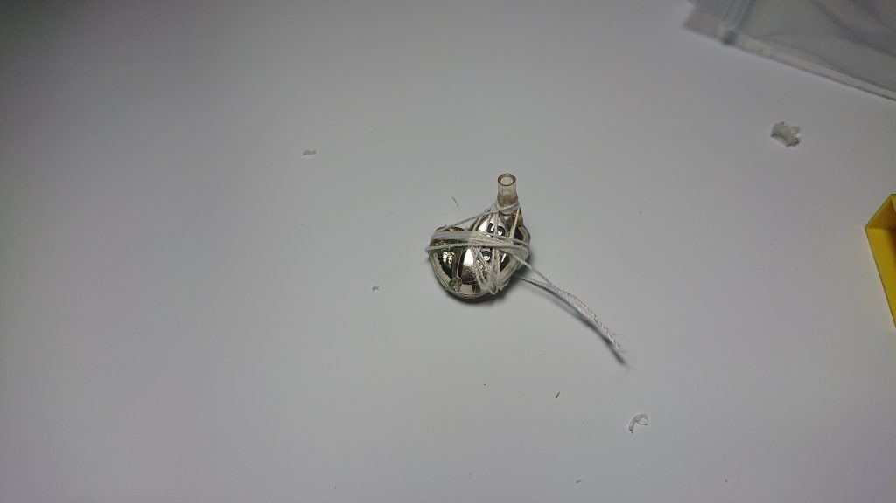
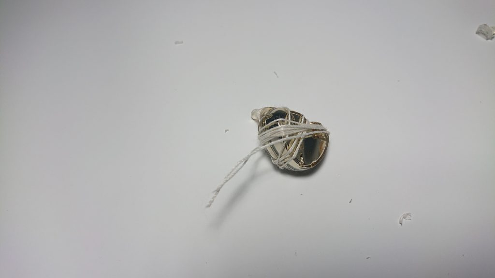
移植到新壳后就是玩捆绑游戏了。
损坏的滤网，近期是不会在购买，更新了，有时间在处理吧。